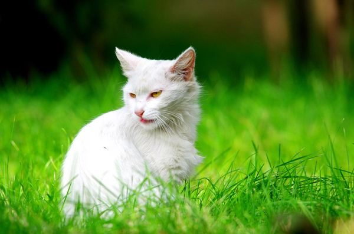
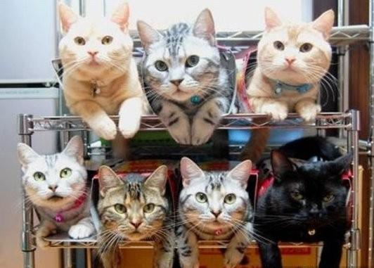

其他

防晒
防晒很重要！防晒很重要！防晒很重要！重要的事情说三遍！紫外线无处不在，即使你在屋中也请涂上低倍防晒。紫外线的损害是日积月累的一个过程，最终量变引起质变。详细的说明会在今后文章中提到。
精华
还在为脸上难看的痘印困扰吗？是否渴望着自己能够白成一道闪电，亮瞎整个夏天？那么第一步请使用防晒（手动滑稽）！第二步才是合理使用美白精华！关于常见有效的美白成分将在之后的文章中介绍。


各种其他
套用果壳美组的话：美丽也是技术活。走过上面几个步骤，是不是要来点进阶的玩意儿啦？被痘痘困扰的要不来刷一下酸，弄次化学换肤，什么水杨酸，果酸，杏仁酸，杜鹃花酸，维A酸，壬二酸统统往脸上招呼；或者是开始尝试一下各种A类猛药，感受一下强烈的效果与猛烈刺激！好吧，大家别去作死了，毁容了东东可不管。